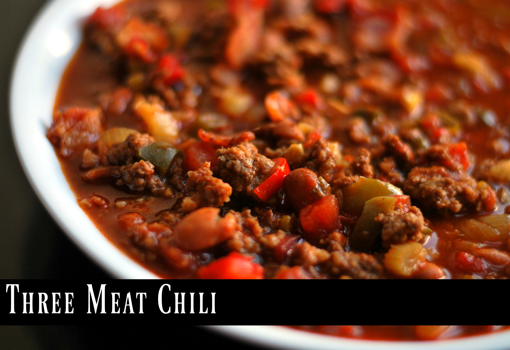

Three Meat Chili

Ingredients
- 1lb bacon cooked and crumbled
- 2lb ground beef
- 1lb mild Italian sausage, crumbled with casing removed
- 1 15oz. can of chili beans in mild sauce
- 1 15oz. can of chili beans in spicy sauce
- 2 15oz. cans petite diced tomatoes with juice
- 1 6oz. can tomato paste
- 1 large yellow onion, chopped
- 3 stalks celery, finely diced
- 1 green bell pepper
- 1 red bell pepper
- 2 Anaheim chili peppers, finely chopped with seeds removed
- 3 cups beef broth
- 1/2 cup beer
- 1/4 cup chili powder
- 1 tbsp Worcestershire sauce
- 1 tbsp minced garlic
- 1 tbsp dried oregano
- 2 tsp ground cumin
- 1 tsp Tabasco sauce
- 1 tsp salt
- 1 tsp black pepper
- 1 tsp cayenne pepper
- 1 tsp paprika
- 1 tsp white sugar
Instructions
- In a larrge stock pot or dutch oven, cook chopped bacon until crispy.
- Remove bacon with a slotted spoon to drain on paper towels, and drain off the grease.
- Brown the ground beed and crumbled Italian sausage and drain off the extra grease.
- Stir in all the remaining ingredients to blend and let simmer on low, covered all day, occasionally stirring.
- Before serving, test the seasonings and adjust salt, pepper, and chili powder to taste.
Recipe credit: auntbeesrecipes.com
Recipe Home